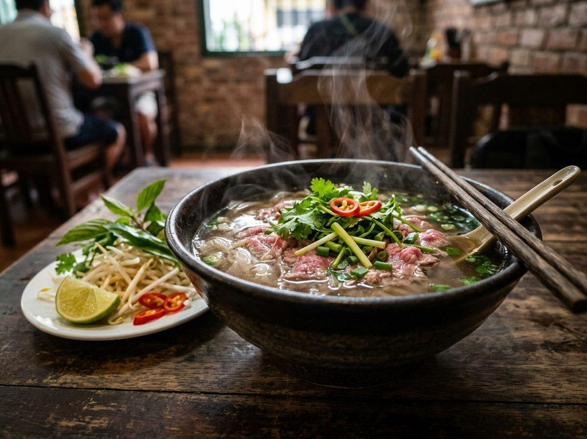
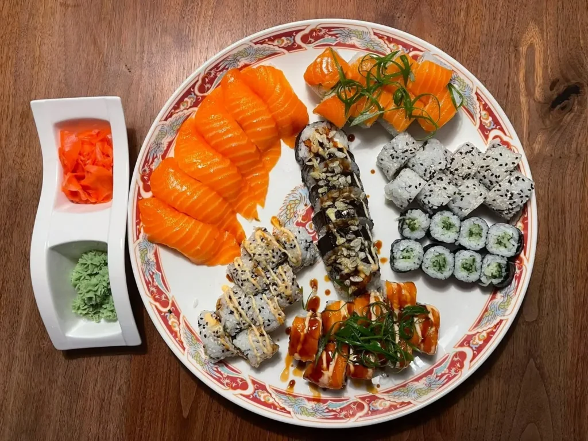
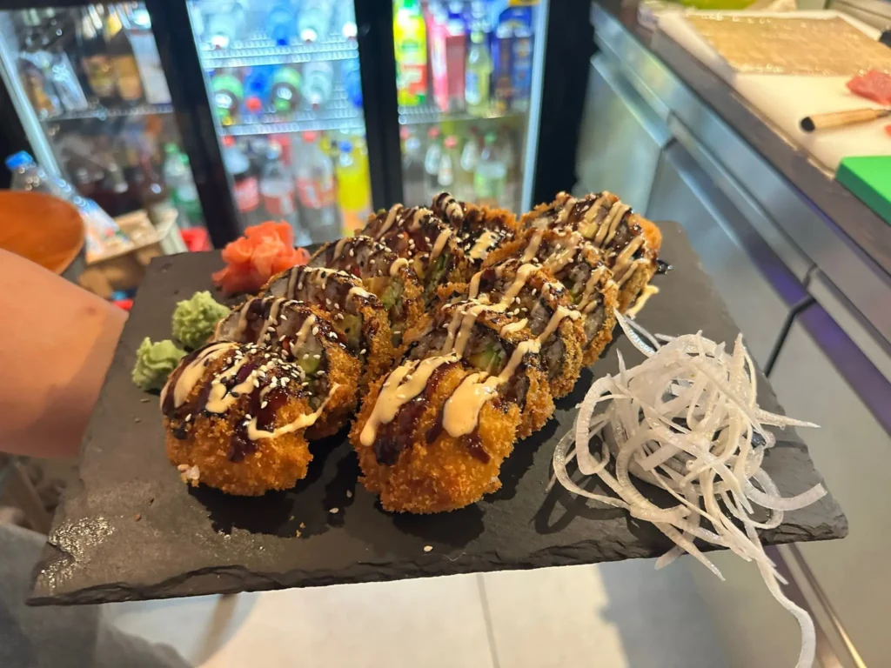

Hot Food
Vietnamesisch, wie zu Hause gekocht
Unsere Brühen ziehen über Nacht, frische Kräuter kommen erst ganz zum Schluss dazu. Dazu gibt's hausgemachte Limonade mit Limette, Ingwer und Zitronengras.
Hot Food · Sushi · Good Mood
Warme vietnamesische Spezialitäten und frisch gerolltes Sushi. Mach's Dir bei uns gemütlich oder nimm Dir Dein Essen einfach mit.
Kontakt
Frankfurter Straße 33
63303 Dreieich-Sprendlingen
Öffnungszeiten
Auswahl
Du hast Lust auf eine kräftige Phở, deine Begleitung eher auf Lachs-Nigiri? Kein Problem. Bei uns kommt beides frisch aus einer Küche auf euren Tisch.

Hot Food
Unsere Brühen ziehen über Nacht, frische Kräuter kommen erst ganz zum Schluss dazu. Dazu gibt's hausgemachte Limonade mit Limette, Ingwer und Zitronengras.

Sushi
Wir halten unsere Auswahl bewusst klein, damit alles immer frisch ist. Jede Rolle machen wir erst, wenn du bestellst. Deshalb kann es ein paar Minuten länger dauern, aber das schmeckst du.
Aus der Karte
Über uns
Seit 2026 führen wir das Bao Sushi Bistro in Sprendlingen. Wir kochen, was wir selbst am liebsten essen: vietnamesische Küche nach Familienrezepten und Sushi, das wir frisch für dich rollen. Schau vorbei und lern uns kennen.

Vor Ort oder zum Mitnehmen
Ob du mittags schnell etwas Warmes brauchst oder abends in Ruhe essen willst: Bei uns ist beides möglich. Setz dich in unser kleines Bistro oder nimm dein Essen einfach mit nach Hause oder ins Büro.

Wir hatten das frittierte Sushi und zwei Nudelgerichte: die gebratenen Nudeln mit knuspriger Ente und die gebratenen Udon-Nudeln mit Tofu. Beides war sehr lecker! Das Sushi war das Beste, was ich seit Langem gegessen habe, absolut empfehlenswert! Die Bedienung war sehr freundlich und aufmerksam. Wir haben uns rundum wohlgefühlt und kommen auf jeden Fall wieder.
Sehr gutes Essen. Es gibt viel mehr als Sushi. Kleines schönes Lokal. Bedienung sehr höflich und aufmerksam.
Wir waren mit Bao Sushi sehr zufrieden! Hier gibt es nicht nur Sushi, sondern auch eine schöne Auswahl an anderen asiatischen Gerichten. Wir hatten Hühnchen süß-sauer und rotes Thai-Curry zum Mitnehmen bestellt. Beides war sehr lecker und hat uns gut geschmeckt! Praktisch ist auch, dass Bao Sushi einen Lieferservice anbietet. Wir bestellen gerne wieder!
Anfahrt
Du findest uns mitten in Sprendlingen in der Frankfurter Straße 33, nur wenige Minuten von Buchschlag, Dreieichenhain und Neu-Isenburg entfernt. Täglich mittags von 11:00 bis 14:30 und abends von 17:00 bis 21:30 Uhr.
Route planenBestellen
Dann ruf kurz bei uns an und gib deine Bestellung durch. Wir legen direkt los, und du holst dein frisches Essen einfach ab, sobald es fertig ist.
